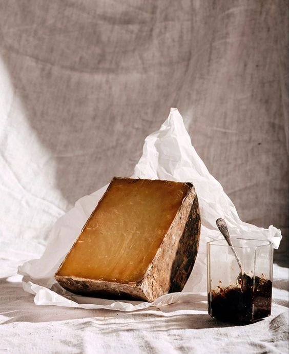

Nørrebro Kolonial is a local store located in Nørrebro. We sell
quality products made by small producers with a craft from Greece,
France and Italy.
We sell the experience of the countries by the smell, taste and
appereance of the store.
Who we are
At Nørrebro Kolonial we aim to be a direct link between small
international farms and consumers.
We want to be able to have the knowledge about every product that we
have in the store: how it is produced, where it comes from, what is
the story behind every product and we want to have a certain quality
that we believe is the quality we choose for our store.
We spend a lot of time choosing what we have, and it is about small
producers with a craft.

What you can get
We spend a lot of time choosing what products we sell, and it is all about small producers with a craft.
-

Name
Description -
Name
Description -
Name
Description -
Name
Description -
Name
Description
Our producers
These are some of the small realitives that keep food-making-traditions alive. But we always discover new and more and you can learn about them by visiting our store.
Cheeses and Wine
Company Name
Cheeses and Wine
Company Name
Cheeses and Wine
Company Name
Cheeses and Wine
Company Name